Para comenzar a hablar de la historia de Ar menia y de su geografía debemos hacer primeramente una aclaración: al hablar de Armenia Histórica nos referimos a un territorio mucho más extenso que lo que hoy se conoce por Armenia, es decir, la actual república de Armenia. Ésta es apenas un 10% de lo que fue la Armenia Histórica, está ubicada en los confines orientales de ésta y comprende sólo 29.793 kms cuadrados. El resto se halla repartido entre Turquía, Irán, Azerbaiyán y Georgia. La antigua provincia ar menia de Artsaj, al este de la meseta de Arme nia, constituye, después de la guerra librada con Azerbaiyán por su independencia –entre 1991 y 1994– una república independiente de facto, no reconocida aún por la comunidad internacional. La meseta de Armenia, territorio habitado por los armenios desde épocas remotas, está situada al centro y este de Anatolia, en una encrucijada entre Europa y Asia. Debido a esta posición es tratégica fue invadida, ocupada y disputada desde la Antigüedad y su pueblo debió sobrellevar un destino de guerras y luchas para mantener su vida y su identidad y forjó un carácter indómito y or gulloso de su ser nacional, orgullo que, también, persiste en su diáspora, formada a través de los siglos como consecuencia de las migraciones pro ducidas por las numerosas invasiones sufridas, y acrecentada enormemente a principios del siglo XX como consecuencia del genocidio llevado a cabo por el estado turco.
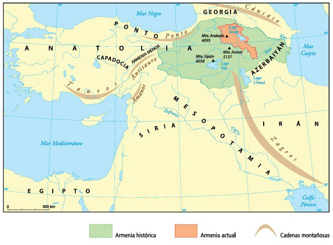
Armenia Histórica estaba ubicada en una meseta
volcánica que se alza a unos mil metros sobre el
nivel del mar, sobre la falla de Anatolia y a ésto
se debieron los frecuentes terremotos que sufrió
a lo largo de la historia y que aún siguen regis
trándose, como el de 1988, con epicentro cerca
de Spitak, al noroeste de la república de Armenia,
que fue devastador ya que fueron destruídas va
rias ciudades y murieron treinta mil personas.
La cadena montañosa del Ponto separa la meseta
de Armenia del mar Negro; y la cadena del Pe
queño Cáucaso, de Georgia, formando el límite
norte de la república de Armenia. La cadena del
Antitauro la separa de Siria y Mesopotamia y
conecta con la cadena del Zagros y la meseta de
Irán que forma el límite sudeste de la meseta de
Armenia. El Éufrates constituye el límite oeste;
el Caspio, el límite este. Las numerosas cordille
ras que surcan el territorio lo convierten en una
verdadera fortaleza natural, un “país de piedra”
o karastán –en armenio–, al mismo tiempo que
demarcan regiones, separándolas, hecho que tuvo
consecuencias políticas determinantes a lo largo
de la historia armenia.
El pico más alto es el Ararat –Masís para los ar
menios– con 5165 mts. Desde la firma del trata
do de Kars entre Turquía y Rusia, en 1921, este
símbolo de la identidad armenia está en poder de
Turquía que le cambió el nombre por Agri Dagh.
También el monte Sipán, con 4344 mts, está en
Turquía. El Arakads, con 4180 mts, es el pico
más alto de la república de Armenia que está atra
vesada por varias cadenas de montañas: Pambak
y Bazum al norte; Keghamá, Vartenís y Seván, en
el centro y Zanguezur, al sur.
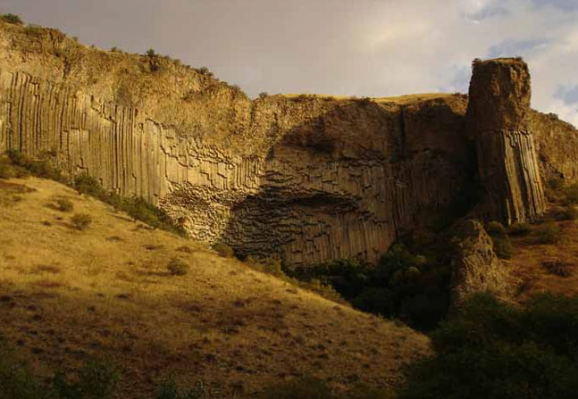
Foto 1: paredes de basalto, de la cadena Zanguezur, al sur de Armenia, convierten a la región en una verdadera fortaleza natural.
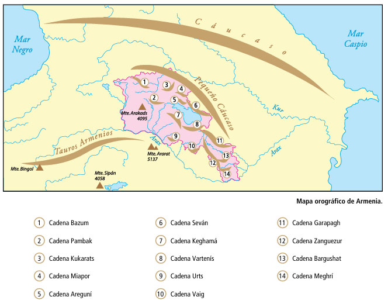
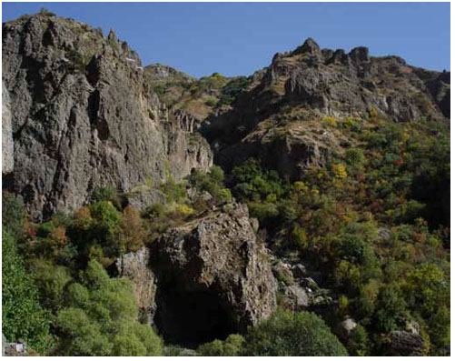
Foto 2: montes Pambak, en el centro de Armenia. Se dice de Armenia –Hayastán, en armenio– que es un país de piedra –”karastán”, en armenio–.
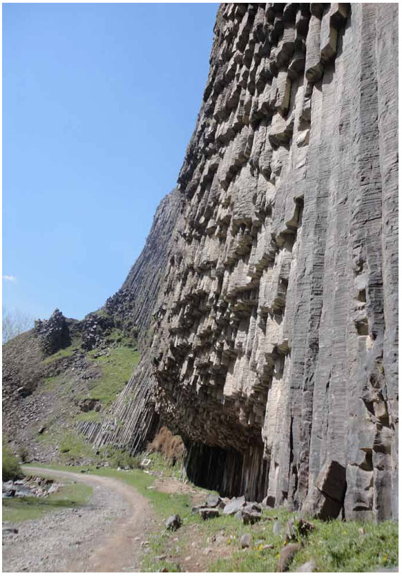
Foto 3: columnas de basalto, en el cañón del río Azad. El sitio, conocido como Sinfonía de Piedras, está en una profunda garganta, en Garní, a 23 kms de Ereván. Allí, al enfriarse las densas corrientes de lava, se formó una pared de bloques perpendiculares de pilastras pentagonales que semejan los tubos de un órgano.
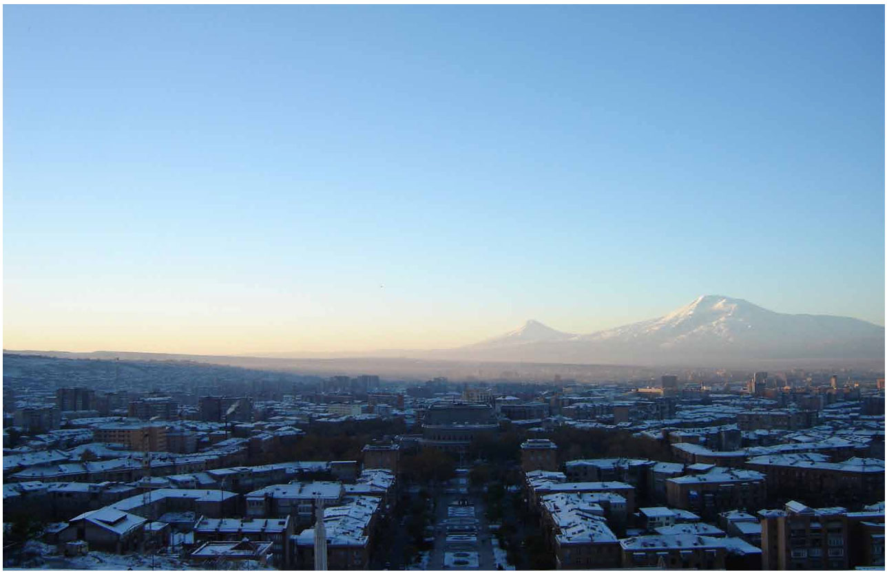
Foto 4: el monte Ararat y la ciudad de Ereván, capital de Armenia. El Ararat se alza majestuoso y protector a pocos kms, con sus dos picos, el Gran Ararat o Medz Masís –en armenio– y el Pequeño Ararat –o Pokr Masís–, cubiertos por nieves eternas. Allí se habría asentado la bíblica Arca de Noé. Constituye, desde siglos, el símbolo de la identidad armenia, sin embargo, desde 1921 está en poder de Turquía.
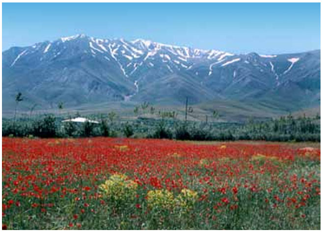
Foto 5: monte Sipán, al norte del lago Van, es después del Ararat, el pico más alto de Armenia Histórica. Hoy es parte de Turquía.
El territorio de Armenia Histórica, atravesado por
altas montañas de cumbres nevadas, está regado
por ríos torrentosos que en la primavera, al de
rretirse la nieve, bajan por profundas gargantas
de peñascos, irrigando a su paso los valles, ferti
lizándolos, haciéndolos aptos para la agricultura y
ofreciendo posibilidades para el desarrollo de
la energía hidroeléctrica. El Tigris y el Éufrates
nacen en las montañas de Armenia, recorren el
extenso territorio conocido como Mesopotamia y
se vuelcan en el golfo Pérsico. El Arax, que en un
tramo marca, actualmente, el límite entre Turquía
y Armenia, nace en el monte Bingol, cerca de Er
zerum, hace un extenso recorrido, surca y riega
la llanura del Ararat, marca el límite con Irán,
se une al río Kur en Azerbaiyán y desemboca en
el mar Caspio. Constituyó un importante medio
de comunicación y de comercio y una vía de pe
netración de pueblos invasores. Está prevista la
construcción de una importante planta hidroeléc
trica sobre el río Arax, en la frontera con Irán, que
será un emprendimiento conjunto armenio iraní.
En el territorio de la república de Armenia, el río
Hrazdán, tributario del Arax, atraviesa la capital
Ereván. Sobre él se han construido varias repre
sas y estaciones hidroeléctricas que proveen de
energía al país. También en Armenia, son tributa
rios del Arax los ríos Arpá, Kasaj, Azad, Vorodán
y Ajurian.
Otro río que tiene sus nacientes en Armenia His
tórica, cerca de Kars, es el Kur o Kurá. Desde allí
se dirige hacia el este, hacia Georgia y luego a
Azerbaiyán donde se le une el Arax. El río Debet,
que riega la hermosa región de Tavush, al norte
de Armenia, es su tributario.
Además de infinidad de pequeños lagos de mon
taña, hay tres lagos grandes en el territorio de Ar
menia Histórica. El más importante es el de Van,
al sudeste de la actual Turquía. Su alto contenido
de bórax hace que sus aguas no sean aptas para el
riego. En la república de Armenia, el lago Seván,
llamado antiguamente Kegham, se halla a 1916
mts sobre el nivel del mar y hoy está en una si
tuación preocupante como consecuencia del des
censo de sus aguas. La superficie actual del lago
disminuyó en la última década y se espera que
con la construcción de los túneles Arpá y Voro
dán, que vuelcan las aguas de esos ríos al lago, y
el uso racional de las mismas, aumente su nivel
y se salven las especies en peligro de extinción.
También formaba parte de la Armenia Histórica
el lago Urmiá, localizado actualmente en Irán, de
aguas muy saladas que no permiten la existencia
de peces.
“Voy a referir una cosa que… es para mí la mayor de todas las maravillas de aquella tierra. Los barcos en que navegan río abajo hacia Babilonia, son de forma redonda y están hechos de cuero. Los habi tantes de Armenia, pueblo situado arriba de los asirios, fabrican las costillas del barco con varas de sauce, y por la parte exterior las cubren extendiendo sobre ellas unas pieles, que sirven de piso… va dentro, por lo menos, un burro vivo y en los mayores van muchos. Luego que han llegado a Babilonia y despachado la carga, pregonan para la venta las costillas y armazón del barco… Cargan después en sus burros los cueros y parten con ellos para la Armenia, porque es del todo imposible volver nave gando río arriba a causa de la rapidez de la corriente”
HERODOTO, Los Nueve Libros de la Historia, Libro I, cap. CXCIV.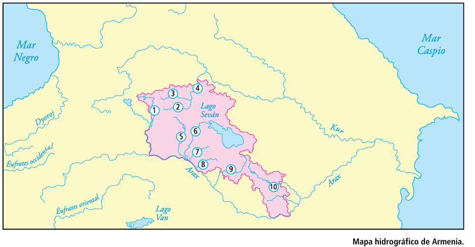
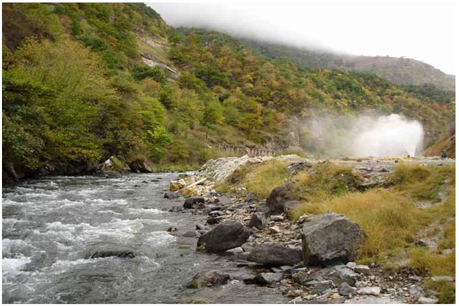
Foto 6: ríos torrentosos bajan de la montaña atravesando peñascos y fertilizando las orillas. En la foto, el río Arpá, en las inmediaciones de Ieghegnadzor
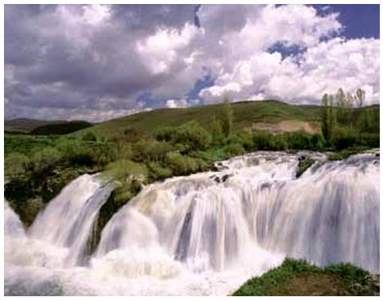
Foto 7: cascada del río Muradié, llamado Pergrí por los armenios, al noreste del lago Van.
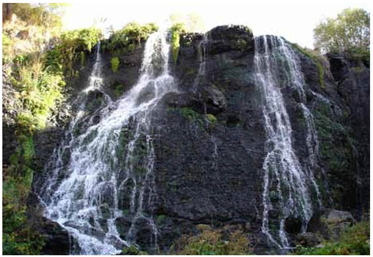
Foto 8: caídas de agua en Shakí, al sur de Armenia. En la garganta del río Vorodán una saliente de lava solidificada produce esta caída de agua de 18 mts de altura.
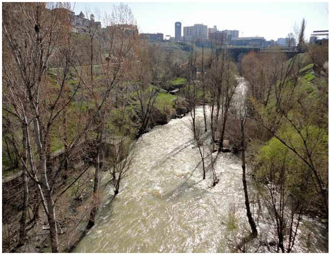
Foto 9: río Hrazdán, atrás, la ciudad de Ereván
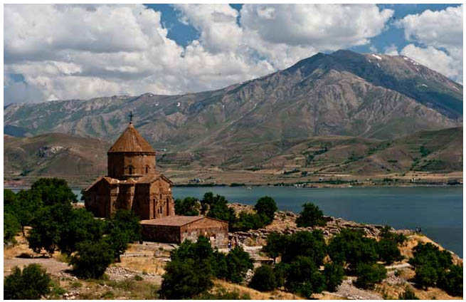
Foto 10: : lago Van e isla de Ajtamar, donde se alza la hermosa iglesia de Santa Cruz, del siglo X, enteramente cubierta de relieves y que era parte de un palacio y de un complejo religioso, de los cuales no queda absolutamente nada
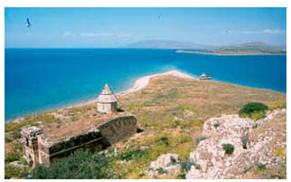
Foto 11: : lago Van, isla Ktuts o Karpanak. Allí, como en las otras cuatro islas del lago, se había construido un monasterio del que solo quedan las ruinas de la iglesia de San Juan, del siglo XII.
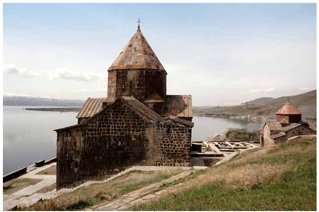
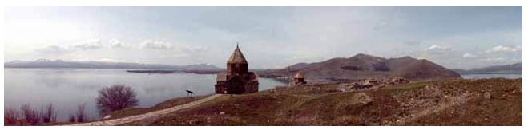
Foto 12 : lago Seván, en el corazón de Armenia, a una altura de 1916 mts sobre el nivel del mar. En la fotografía se ven las dos iglesias que quedan de lo que fue un complejo monástico construido en el siglo IX, en lo que era una isla y que, al bajar las aguas del lago, se convirtió en una península.
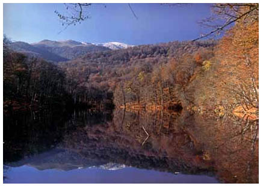
Foto 13: lago Parz. Este pequeño y cristalino lago se halla al noreste de Armenia, en el Parque Nacional Dilidyán, sitio de hermosos paisajes boscosos, abundantes manantiales y fuentes minerales.
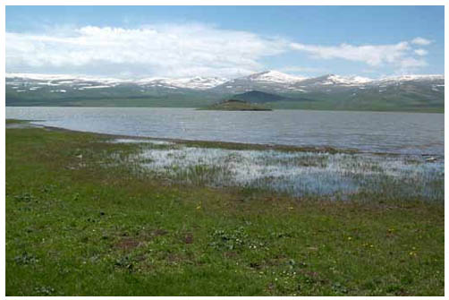
Foto 14: lago Arpí, al noroeste de Armenia, declarado Parque Nacional, en 2009, es un sitio muy visitado por los conservacio nistas y por los avistadores de pájaros ya que allí se han podido observar más de 140 especies, algunas migratorias y otras residentes.
La ubicación de la meseta de Armenia en un si
tio en donde convergen tres áreas biogeográficas
diferentes –la caucásica, la persa y la mediterránea–
hace que el paisaje ofrezca grandes contras
tes y una gran diversidad de flora y fauna. Por un
lado, altas montañas de nieves eternas y estepas;
y por otro, fértiles llanuras, de las cuales solo las
de Shiraz y Ararat forman parte de la república
de Armenia. Las de Alashkert, Manazkert, Mush,
Jarpert y Garín, que pertenecían a la Armenia
Histórica, actualmente integran Turquía, y las de
Sharur y Najicheván fueron anexadas por Azer
baiyán. Después de la guerra con Azerbaiyán, la
llanura de Garapagh pasó a ser parte de la repúbli
ca de Nagorno Garapagh. A través de la historia,
la llanura del Ararat fue la región más densamente
poblada y donde se situaron las capitales históricas
de Armenia: Armavir, Iervantashat, Ardashat,
Tvín, Vagharshapat y Ereván.
Esta geografía difícil, en donde se alternan mon
tañas, estepas áridas y abruptas pendientes ayudó
a forjar el carácter rudo y sufrido de sus habitan
tes, carácter que los ayudó a sobrellevar los terri
bles acontecimientos de su larga historia.
El clima es variado. Los inviernos son largos y
severos con temperaturas muy bajas y mucha nie
ve y los veranos cortos y cálidos. Esto permitió el
desarrollo de una gran biodiversidad en la flora y
la fauna.
En cuanto a las posibilidades para la agricultura,
si bien el tiempo apto para cultivar es breve, esto
está compensado por la fertilidad de los suelos de
tierras negras de origen volcánico y por la creación
de un complejo sistema de irrigación, dise
ñado y construido por la civilización urartú, en
el siglo IX a.C. Estas condiciones posibilitan una
rápida germinación y se pueden obtener excelen
tes cosechas de diferentes tipos de cereales, arroz,
algodón, olivo, vid y variedad de frutas como el
damasco, que los romanos llevaron a Europa. En
las tierras altas, no aptas para el cultivo pero cu
biertas de pasto y abundantes hierbas, la principal
actividad es el pastoreo de cabras y ovejas.
El clima seco y los vientos erosionan el suelo y
lo desertifican y, por ello, desde la Antigüedad se
plantaron extensas zonas con árboles. En el siglo
IV, el rey Josrov mandó crear dos bosques para
ser utilizados en las cacerías reales, que hoy son
parte de una Reserva Estatal –la Reserva Josrov–.
Se encuentran en el marz –provincia– de Ararat,
en el centro de Armenia y cuentan con antiquí
simos ejemplares de robles, fresnos y especies
silvestres.
En el noreste de Armenia, en las regiones de Lorí
y Tavush, con frecuentes lluvias, los bosques son
muy abundantes y la zona tiene un aspecto muy
alpino, diferente al del resto del país. Los bosques
y arboledas que hacia la Edad Media cubrían el
40% y en las últimas décadas el 25% del suelo del país,
sufrieron graves daños entre 1991 y
1994, por la depredación humana ante la falta de
combustible durante la guerra de Garapagh y hoy
apenas llegan a cubrir el 8% del territorio. Varias
fundaciones y ONGs del país y de la diáspora –el
Armenia Tree Project, por ejemplo– tratan de re
vertir la deforestación plantando árboles
“en el distrito de Ararat… todas las plantas y flores son cultivadas; es ésta una región fecunda que provee todo lo necesario para sostener la vida humana, plena de bellezas, con extensas llanuras con abundantes animales de caza, hermosos sitios y fértiles campos rodeados de montañas… De los picos de las montañas descienden arroyos que riegan los campos que no necesitan irrigación y aseguran una ilimitada abundancia de pan y vino, perfumadas, deliciosas y sabrosas verduras y una variedad de plantas que producen aceite… muchos tipos de raíces de plantas útiles a los sabios doctores que las reconocen para hacer sus medicinas… Se encuentra, también, oro, cobre, hierro y piedras preciosas…”
LÁZARO DE PARBI (GHAZAR PARBETSÍ), Historia de Armenia, parte I, cap. VII.La región posee yacimientos de oro, plata, hierro, zinc, cobre, estaño, bórax, obsidiana, molibde no, silicatos y minas de sal. Esta gran riqueza de minerales permitió el desarrollo de la metalurgia desde tiempos remotos y Armenia fue uno de los lugares donde, por primera vez en la historia de la humanidad, se fundió el bronce. Se hacían úti les de labranza, arneses, carros de guerra, cascos y escudos. También abundan los materiales de construcción: mármoles, basalto, granito y, espe cialmente, toba o duf, una piedra volcánica en va rios colores y muy fácil de trabajar. Esto facilitó el desarrollo de la arquitectura y, desde épocas tempranas, los pobladores de la región fueron há biles constructores e ingenieros.
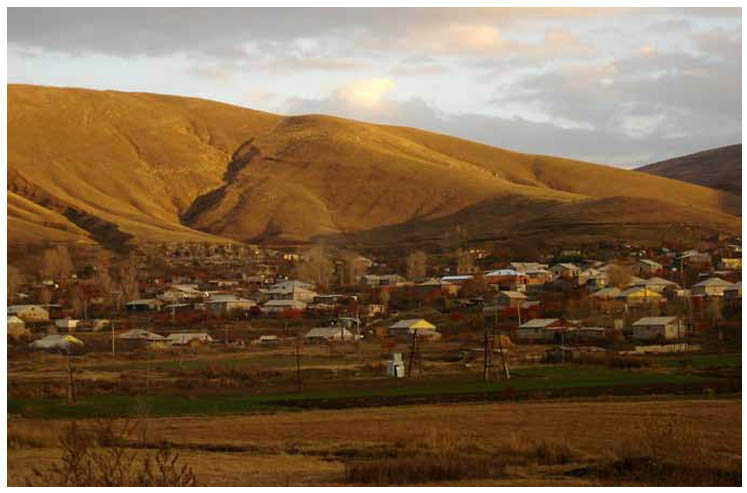
Foto 15: gran parte del territorio de Armenia es montañoso y árido y apenas asoma la vegetación.
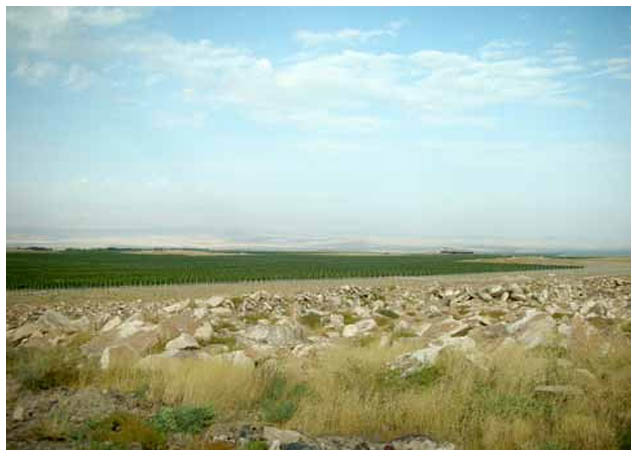
Foto 16: para cultivar estos viñedos en Paghramian, en la provincia de Armavir, hizo falta despejar las rocas del terreno y amontonarlas a un costado de los campos.
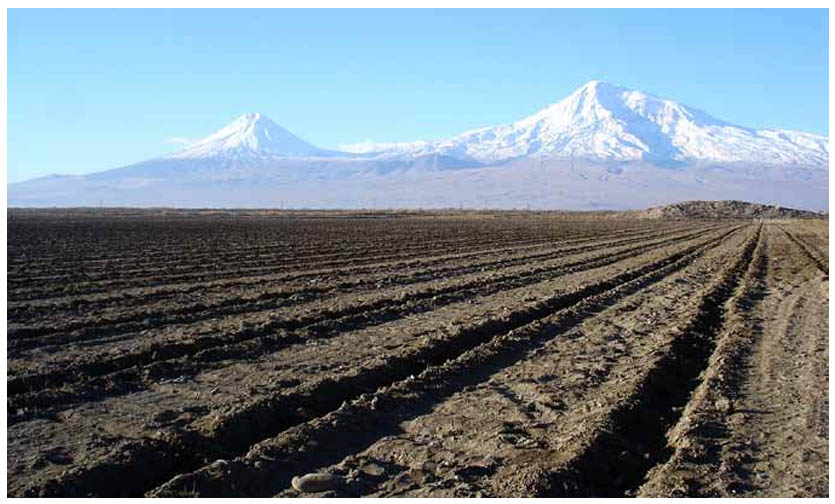
Foto 17: llanura del Ararat, una de las zonas más fértiles de Armenia, donde durante siglos se construyeron las capitales.
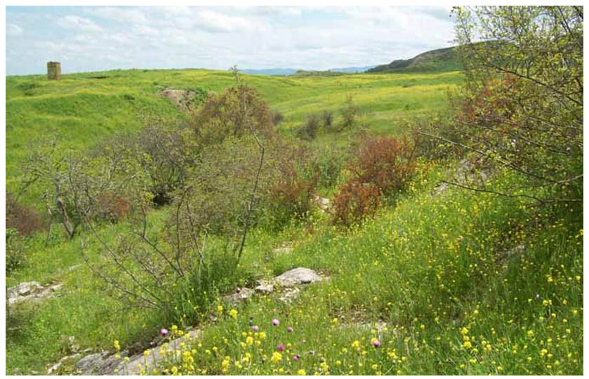
Foto 18: : llanura del río Karkar en Artsaj (o Garapagh).
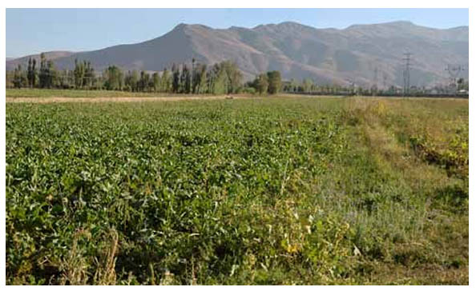
Foto 19: paisaje de la llanura de Mush que, hoy, forma parte de Turquía. Altas montañas y fértiles campos habitados, mayor mente, por población kurda.
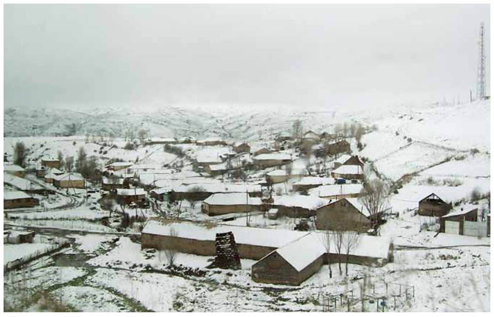
Foto 20: paisaje nevado. En la meseta de Armenia los inviernos son muy rigurosos y en algunas regiones duran más de seis meses.
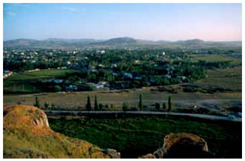
Foto 21: campos en los alrededores de la ciudad de Van –hoy en Turquía–, donde gracias a un sistema de irrigación desarrollado por la civilización urartú, desde el siglo IX a.C, se plantaron viñedos y huertas.
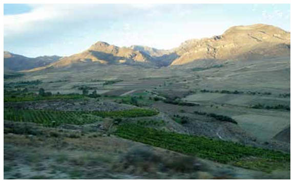
Foto 22: terrazas de cultivo en el centro de Armenia. En un país de geografía rocosa la tierra cultivable es escasa y hay que aprovechar cada palmo de la misma.
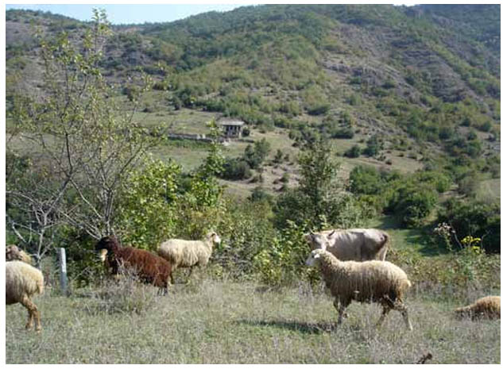
Foto 23: pastoreo en el sur de Armenia. Es la principal actividad en las tierras no aptas para el cultivo.
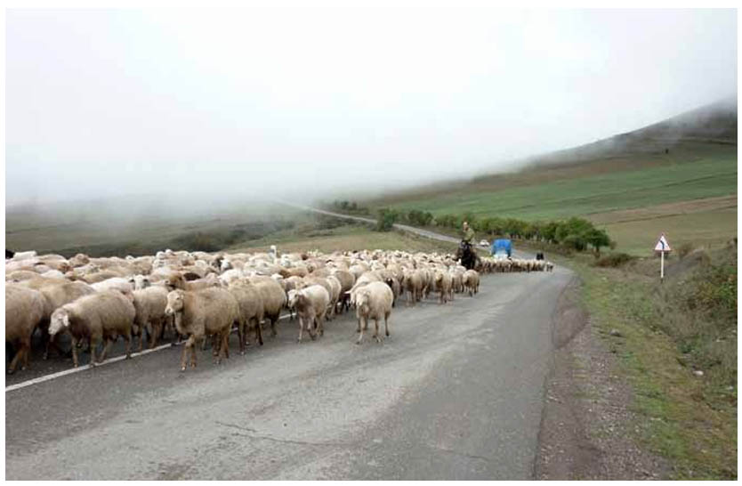
Foto 24: camino a Ieghegnadzor. Frecuentemente los rebaños, conducidos por sus pastores, se posesionan de las rutas de Armenia.
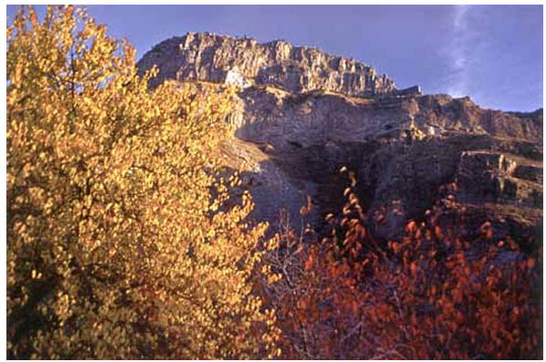
Foto 25: la Reserva Josrov con los montes Pambak, al fondo, en otoño. El rey Josrov II, en el siglo IV, mandó crear dos bosques en el centro de Armenia, para ser usados en las cacerías reales. Hizo plantar diversos tipos de robles, pinos, fresnos y llevar allí diversas especies de animales para ser cazados. Representa, hoy, el 50% del total de la flora y fauna de Armenia.
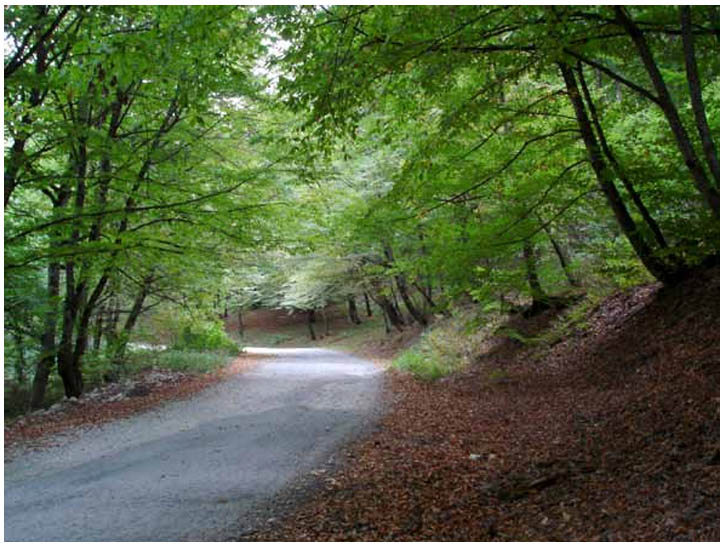
Foto 26: camino al monasterio de Kirants, en el distrito de Tavush, al noreste de Armenia.
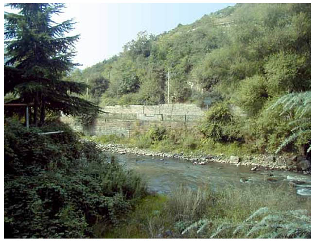
Foto 27 : bosques en el Parque Nacional Dilidyán, al noreste de Armenia. Frondosas arboledas de pinos, hayas, robles, manantiales de aguas cristalinas y una rica fauna caracterizan la región
La región posee yacimientos de oro, plata, hierro, zinc, cobre, estaño, bórax, obsidiana, molibde no, silicatos y minas de sal. Esta gran riqueza de minerales permitió el desarrollo de la metalurgia desde tiempos remotos y Armenia fue uno de los lugares donde, por primera vez en la historia de la humanidad, se fundió el bronce. Se hacían úti les de labranza, arneses, carros de guerra, cascos y escudos. También abundan los materiales de construcción: mármoles, basalto, granito y, espe cialmente, toba o duf, una piedra volcánica en va rios colores y muy fácil de trabajar. Esto facilitó el desarrollo de la arquitectura y, desde épocas tempranas, los pobladores de la región fueron há biles constructores e ingenieros.
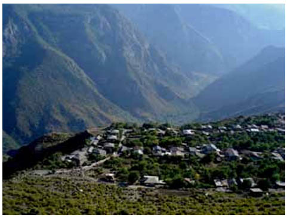
foto 28: aldea en el sur de Armenia. Las montañas protegían y aislaban las diversas regiones del territorio armenio.
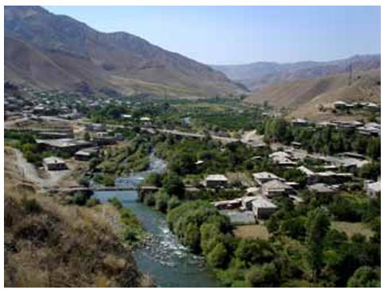
Foto 29: pueblo en Garapagh.
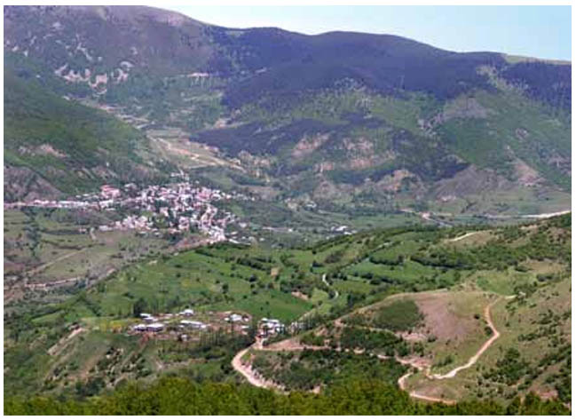
Foto 30: valle de Kars, con las montañas al fondo
La meseta de Armenia es uno de los luga res que los historiadores consideran cuna de la humanidad. La aparición del hombre allí pareciera remontarse a fechas anteriores a los 500.000 años, según lo demuestran útiles de obsi diana hallados en las laderas del monte Arakads y en yacimientos en la región de Kars (actualmente en Turquía). En las montañas Keghamá, Vartenís, en las la deras del monte Arakads, en Siunik y en varios sitios más se hallaron grabados rupestres cuya antigüedad se remonta hasta 5000 a.C. Nos brin dan invalorable información sobre la flora y la fauna en aquella época así como también sobre las costumbres y las creencias del hombre prehis tórico. Casi todos los aspectos de la vida y de la naturaleza están representados en estos petrogli fos: hombres en danzas rituales y en escenas de caza y de lucha, montañas, ríos, árboles, cabras, ciervos, conejos, panteras, serpientes, perros, sol, luna, constelaciones. Los pueblos primitivos ado raban a los astros como dioses y probablemente los grabaran en las piedras con un sentido mágico y ritual, así como al grabar o pintar un ciervo la intención era fijar al animal en la piedra para que fuese más fácil cazarlo. Para realizar los graba dos usaban cortantes y punzones de piedra. En Armenia se han hallado más de 20.000 grabados rupestres, la mayoría en sitios de difícil acceso. En Ujtasar, en las montañas de Siunik, al sur, se alzan las ruinas de una antigua fortaleza amura llada y afuera, diseminados en las laderas frag mentos de rocas con miles de dibujos grabados. Cubiertos nueve meses del año con una espesa capa de nieve, sólo se los puede estudiar durante el verano
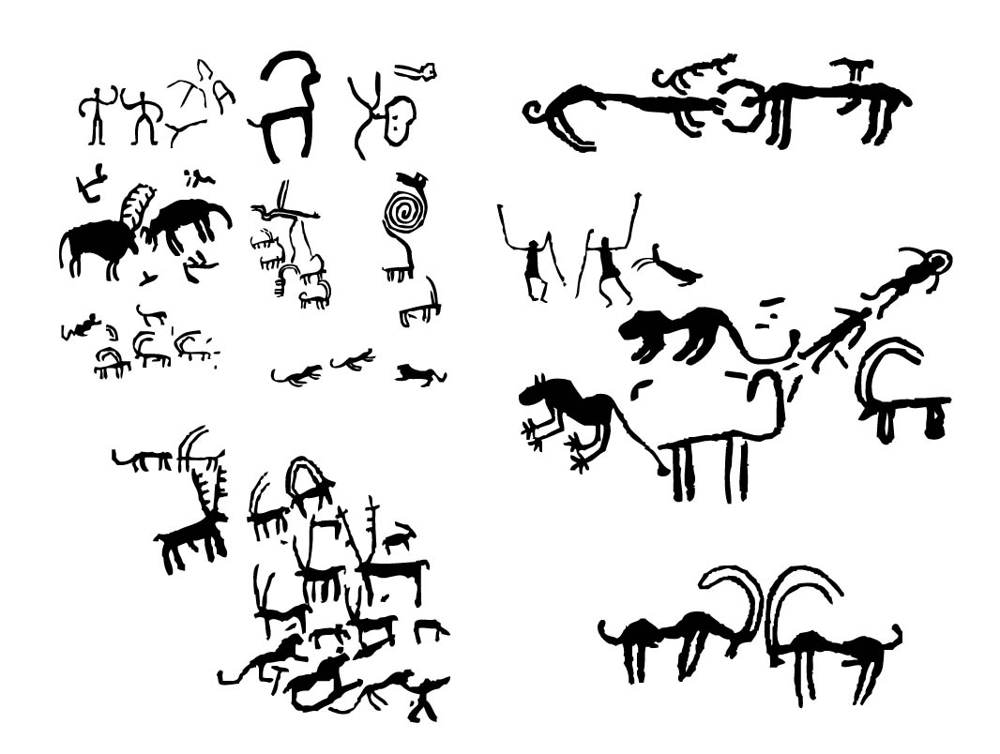
foto 31: Ujtasar. Petroglifos que datan de los milenios V y IV a.C. Grabadas en las rocas, se pueden distinguir escenas de lucha, de caza, danzas rituales, los astros y muchos animales en los cuales se reconoce gran parte de la fauna de Armenia
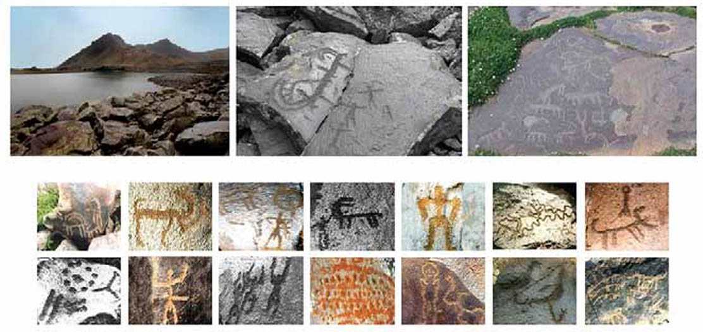
Foto 32: Ujtasar, Siunik. A 3000 metros de altura se alza una fortaleza de murallas ciclópeas con miles de grabados diseminados alrededor.
Foto 33: petroglifo en las montañas Keghamá. El petroglifo de arriba, a la izquierda, según algunos especialistas, representaría la tierra a la que concebían esférica. La cruz y la cruz gamada -esvástica- de abajo son antiguos símbolos de los pueblos indoeuropeos.
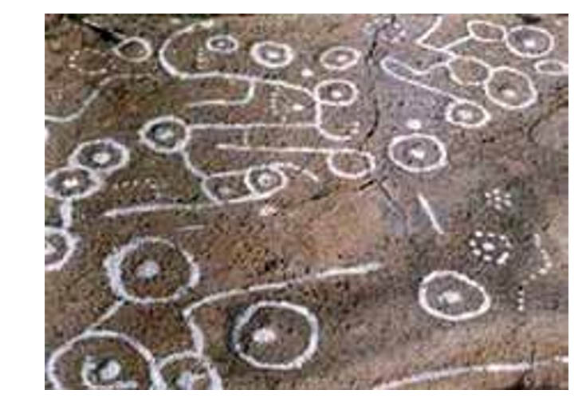
Foto 34: en el distrito de Kegharkunik, cerca de las montañas Vartenis, se hallaron grabados diez mapas estelares, datados entre 2900-2600 a.C que, posiblemente, fueran empleados para orientarse geográficamente. En la foto los grabados están pintados con tiza para un mejor contraste fotográfico.
La “revolución neolítica” trajo muchas innova ciones: la cría de animales, la alfarería, la mim brería, los tejidos. Hacia el 5.000 a.C comenzó el uso del cobre y aparecieron los primeros pobla dos y la división del trabajo. Hacia el 3.000 a.C se inventó la rueda y con la aleación del cobre y del estaño, abundantes en la región, surgió el bronce y se desarrolló la metalurgia. Hay abundantes tes timonios de la vida en Armenia en esta época. En los últimos años numerosas expediciones finan ciadas, en su mayoría, por fundaciones america nas y europeas han descubierto varios yacimien tos que se remontan al Paleolítico y al Neolítico, asociados a abundante material arqueológico. A través de estos hallazgos es posible estudiar los procesos étnicos y sociopolíticos que tuvieron lu gar en Armenia y en toda Transcaucasia en los tiempos prehistóricos. Las primeras comunidades agrícolas tuvieron como consecuencia el desarrollo de la vida se dentaria. A partir de la 2ª mitad del IV milenio a.C Armenia formó parte de la cultura llamada del Kur Arax (por los ríos homónimos). Cientos de restos testimonian el grado de desarrollo al canzado entonces, cuando la meseta armenia era un sitio de aprovisionamiento de materia prima para el mundo antiguo. En la llanura del Ararat se han encontrado muchos yacimientos arqueo lógicos en las colinas, sobre las orillas de los ríos Hrazdán, Kasaj, Medzamor. En Shengavit, en el valle del Ararat, en los suburbios de Ereván, se halló un poblado de la Edad de Bronce que data del IV milenio a.C, con viviendas circulares de ladrillos secados al sol. Numerosos objetos de cobre y cerámica fueron encontrados allí. Esta ba rodeado de murallas altas, con torres y en un silo cercano se almacenaba trigo y cebada. Poseía un sistema de irrigación y varios altares de fuego para uso doméstico y ritual. Un pasaje subterrá neo llevaba desde la aldea al río. Una expedición arqueológica armenio americana realizada recientemente –2010– halló evidencias de la producción sistemática de hierro. También se encontraron huesos de caballos en una canti dad nunca vista en Cercano Oriente hasta este momento. Los hallazgos realizados llevaron a los arqueólogos a concluir que en Shengavit estaría la cuna de la metalurgia, de la cría de caballos y sería el eslabón perdido en la formación y desa rrollo de la civilización de Mesopotamia
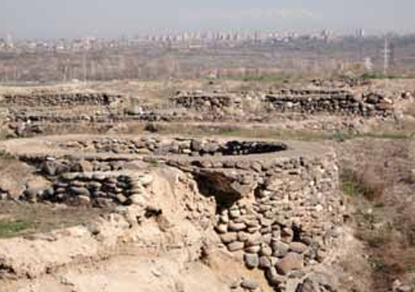
Foto 44: ruinas de Shengavit, en una colina de la ciudad de Ereván, al sudeste del lago Ereván. Era un poblado del 3000 a.C, con viviendas circulares de ladrillos y un sistema de irrigación
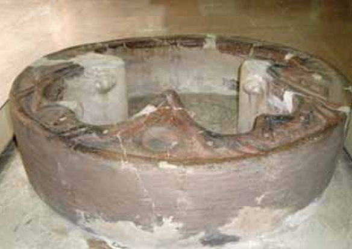
Foto 45: altar de fuego hallado en Shengavit. En estos hogares transportables se quemaba mirra e incienso para adorar a los dioses. Museo Histórico, Ereván.
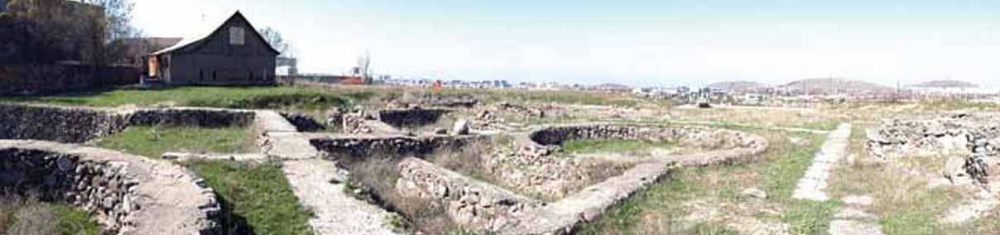
Foto 46: vista panorámica de las ruinas de Shengavit.
En Mojraplur –en armenio, colina de cenizas– a 30 kms al noroeste de Ereván, sobre una colina mirando al río Kasaj, los arqueólogos hallaron los restos de otro poblado del III milenio a.C. Sus ha bitantes construyeron varias presas para canalizar el agua de los manantiales hacia los campos. Se encontraron restos de grano carbonizado que tes timonian la excelente calidad del trigo que allí se cultivaba. También se encontró un santuario con un altar de sacrificios, un gran bloque de piedra montado sobre una plataforma de 6 metros. Este es uno de los más antiguos monumentos religio sos de la humanidad. En la región de Medzamor, a 35 kms de Ereván, se descubrió un importante centro astronómico, religioso, metalúrgico y comercial que fue ha bitado desde el 7.000 a.C. Se calcula que en su época de florecimiento tuvo una extensión de 200 hectáreas y vivieron allí 50.000 personas. Las excavaciones sacaron a la luz estratos de ocu pación que datan del Neolítico pero su gran desa rrollo comenzó con la explotación de los metales y su comercialización. Las minas eran abundan tes y de excelente calidad y sus nativos estuvieron entre los primeros en fundir el oro, el cobre y el bronce y lo hicieron con tanta perfección que los metales que procesaban eran codiciados por to dos los países vecinos. En sus hornos se fundió el bronce hacia el 3.000 a.C y en su observatorio, un gran promontorio de piedras volcánicas rojas en un extremo de la ciudadela, se realizaron, antes que en Babilonia, observaciones del firmamento y de las constelaciones y crearon un calendario que dividía el año en doce meses. También pudie ron determinar la latitud y la longitud, imprescin dibles para orientarse en los viajes ya que, según surge de algunos objetos hallados en los enterra torios, los pobladores de Medzamor comerciaban con China y Egipto. Estos hallazgos permiten corroborar que, desde la más lejana Antigüedad, Armenia fue la encrucija da de las rutas comerciales que unían Asia Central con el Cáucaso y el Mediterráneo. Los artefactos encontrados en algunas de las tumbas, que se ha llaron intactas y ricamente adornadas, evidencian gran riqueza: joyas en oro, plata y bronce, de hermoso diseño, elementos de alfarería, escultu ras, ídolos, lo que hace suponer que se trataría de los enterratorios de los jefes tribales. Junto a sus cuerpos se encontraron huesos de caballos, pe rros y de los sirvientes que debían acompañarlos en la vida del más allá, práctica común entre los pueblos antiguos.También se encontraron pepitas de uva, pera, granos, vino y aceite, ofrendas que no podían faltar en los ritos funerarios. A pesar de las invasiones, conquistas y ocupaciones Medza mor permaneció en actividad durante milenios y fue ocupada hasta el siglo XVII.
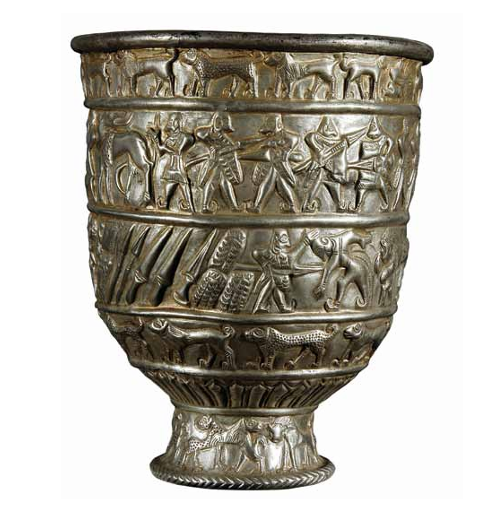
Foto 47: cáliz en plata. Siglos XXII a XXI AC. Museo Histórico, Ereván.
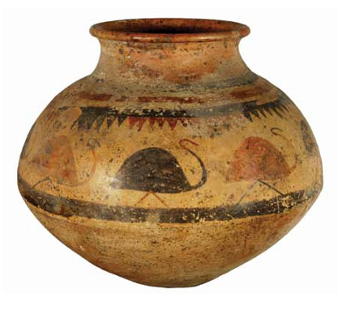
Foto 48: vasija policromada de terracota con dibujos de cisnes. Siglo XIX AC. Museo Histórico, Ereván.
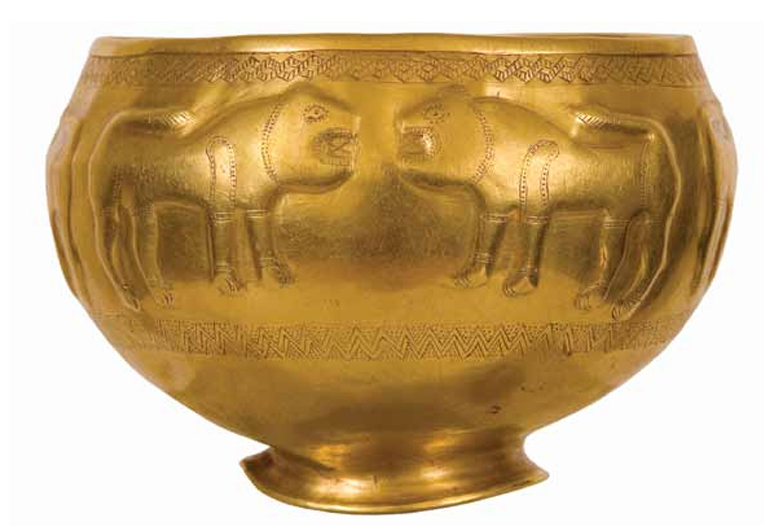
Foto 49: copa decorada con leones en oro. Siglo XVII a.C. Los leones eran símbolo de poder y dominación y fueron un motivo iconográfico muy usado a través de la historia. Museo Histórico, Ereván.
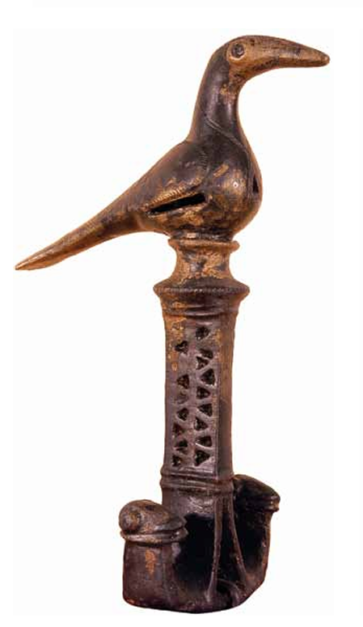
Foto 50: estatuilla de pájaro en bronce. Siglo XV a.C. Los pájaros en las civilizaciones antiguas eran considerados mensajeros de los dioses. Museo Histórico, Ereván.
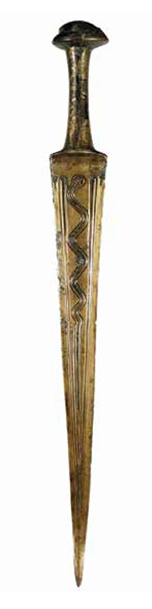
Foto 51: espada de bronce decorada con serpientes. Ldjashén. Siglo XIV a.C. Museo Histórico, Ereván.
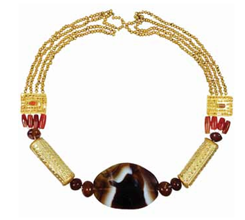
Foto 52: pectoral en oro y ágata. Siglo XXII a.C. Museo Histórico, Ereván.
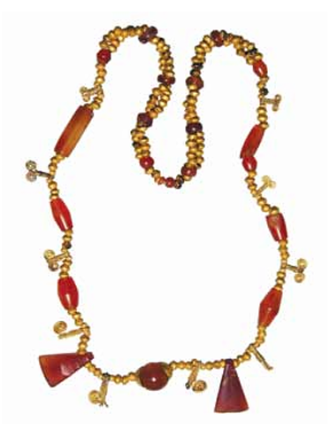
Foto 53: collar de oro; ágata y sardónica. Siglo XXII a.C. Museo Histórico, Ereván.
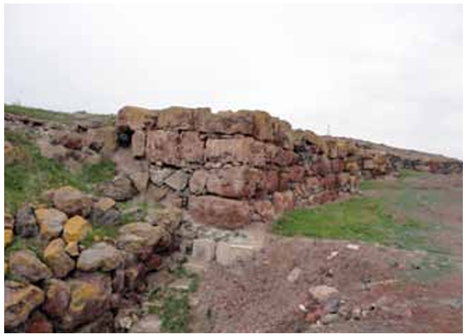
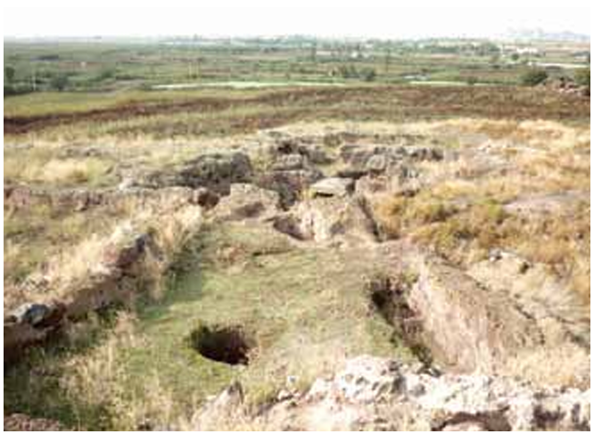
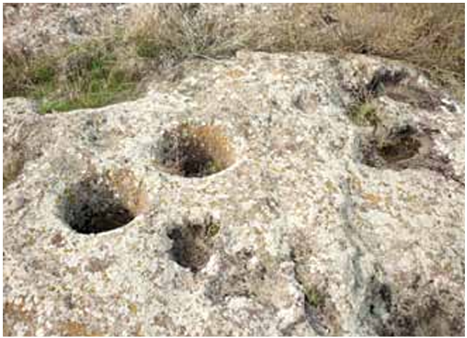
Foto 54: Medzamor. Promontorio en el extremo de la ciudadela, donde estaba el santuario y observatorio astronómico en el cual realizaron, antes que en Babilonia, observa ciones estelares y dividieron el año en doce meses. Se pueden observar cientos de pequeños agujeros tallados en algunas de las rocas, algunos unidos entre sí por pequeños canales, cuya finalidad desconocemos.
Foto 58: “Vishap”, a la derecha y, a continuación, hilera de piedras en forma de falo. Están, ahora, a la entrada del museo de Medzamor pero fueron encontradas en diferentes partes del poblado. Los “vishap” eran piedras de forma pisciforme que se cree estaban relacionadas con el culto al agua y las piedras fálicas eran parte de un rito de fertilidad.
Foto 59: lámpara de cerámica con siete aberturas que, según los arqueólogos, representan el sol, la luna y las cinco constelaciones conocidas en la época.
Foto 60: vasija con decorado de ciervos y cabras.
Foto 61: vasija para almacenar trigo, con decorado de serpientes. Estos reptiles eran considerados benéficos porque resguardaban de los roedores.
Foto 62: pesa de ágata en forma de sapo. Una de las piezas más curiosas del museo de Medzamor. Perteneció a un gobernante babilonio del siglo XVI a.C. Una inscripción sobre el sapo indica su peso equivalente a 8,5 gramos. Se la encontró anudada al cuello de una mujer como talismán.
Foto 63: collar de sardónica. Las joyas eran símbolo de poder y se les atribuían poderes mágicos y protectores. Eran usadas también por los hombres.
Fotos : Medzamor. Cientos de inscripciones talladas en las colinas, algunas del III milenio a.C.
Foto 67: hogar transportable donde, se supone, se quemaba incienso y mirra (provenientes de India) para adorar a los dioses.
Foto 68: sellos –siglo XI a.C– la esvástica es uno de los más antiguos símbolos sagrados que, también aparece en los petroglifos en Medzamor, en las montañas Keghamá y en otros sitios.
En Ldyashén, a orillas del Seván, al bajar el ni vel del lago, se produjo un importante hallazgo arqueológico. Se encontraron varias tumbas que habían estado cubiertas por las aguas. El barro permitió que los objetos se mantuvieran en buen estado durante siglos y así se recuperaron y reconstruyeron varias carretas de madera, con cua tro ruedas, que datan del 1250 a.C y que servían como carrozas fúnebres de los jefes tribales, así como esqueletos humanos, vasijas, juguetes, es tatuillas que se remontan a la edad de bronce.
Foto 69: : carretas halladas en Ldyashén, II milenio a.C. Fueron descubiertas en unos enterratorios al bajar las aguas del lago y se mantuvieron durante milenios gracias al barro que las protegió. Servían como carrozas fúnebres de los jefes tribales. Museo Histórico, Ereván.
Otro sitio de interés es Karahundj o Zorats Karer –piedras de fuerza– al sur de Armenia, que se cree que data del V milenio a.C. Es un conjunto de menhires, 204 piedras de basalto de diferentes tamaños, algunas de hasta tres metros de altura y que pesan hasta diez toneladas. Alineamientos similares hay en muchos lugares del mundo pero Karahundj tiene una característica que lo hace único: los agujeros tallados en la parte superior de algunas de las piedras, a través de los cuales se pueden hacer observaciones astronómicas en determinados días del año, a determinada hora. Este lugar comenzó a ser estudiado recién después de 1980 cuando se descubrieron allí unas tumbas. Desde épocas remotas se atribuían po deres a estas piedras y se cree que el lugar era un santuario prehistórico y un observatorio astro nómico. Como en el sitio se encontraron espejos de obsidiana los especialistas suponen que se los insertaba en la piedra a la manera de lentes. Medzamor y Karahundj eran nombres descono cidos por los arqueólogos hasta hace poco. Hoy muchos especialistas creen que allí estaría la cuna de la astronomía y no en Babilonia como siempre se sostuvo.
Recientes descubrimientos realizados en cuevas en la región de Arení, al sur de Armenia, trajeron a la luz lo que, según los ar queólogos, sería una bodega que data del IV milenio a.C y que sería el primer establecimiento para la elaboración de vino a gran escala. En este sitio arqueológico, que comenzó a excavarse en el año 2009, se realizó además el hallazgo del cerebro humano más antiguo conocido hasta este momento –3000 a.C– preservado gracias al microclima de la cueva. Se encontraron, también, trein ta vasijas con capacidad de 50 litros, semillas, granos de trigo, cebada y restos de damasco y uva disecados, datados con carbo no14 entre el V y IV milenio a.C.
Foto 35a: vista hacia las excavaciones de Arení-1 desde el interior de la caverna.
Foto 35b: algunos de los elementos encontrados.
Foto 36: vista exterior e interior de la caverna.
Foto 37: zona de excavaciones.
El mismo fue hallado en las excavaciones de Arení-1. Data de 5500 años y pudo conservarse gracias a las particulares condiciones climáticas del lugar. En octubre de 2010, también se halló en dichas excavaciones, un trozo de pollera hecha con cañas que, según los arqueólogos, se remontaría a 5900 años.